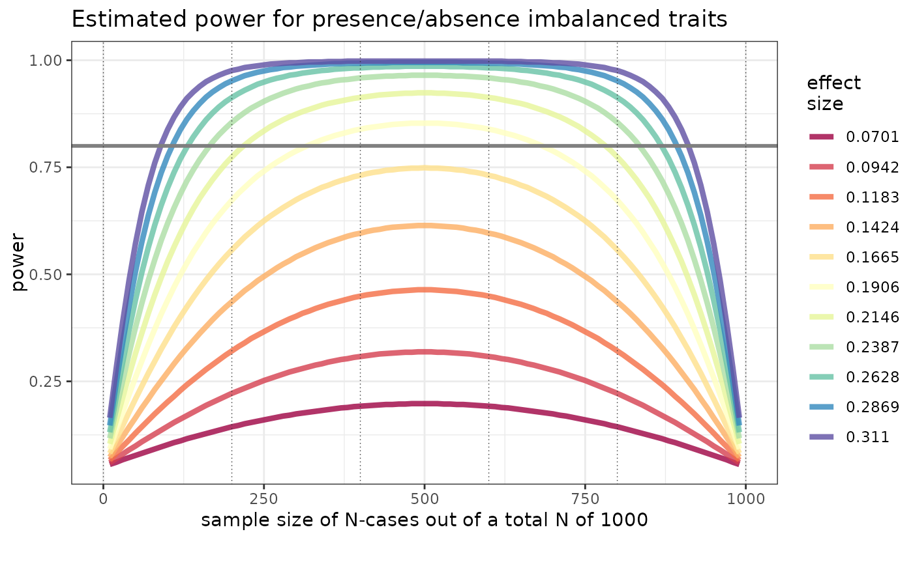

binary trait imbalanced design power analysis plot
imbalanced_power_plot.RdThis function (1) estimates an informative distribution of effect and power estimates given your datas total sample size, over a distribution of imbalanced sample sizes and (2) returns a summary plot.
Examples
ex_data = matrix(NA, 1000, 2)
imbalanced_power_plot( ex_data )
